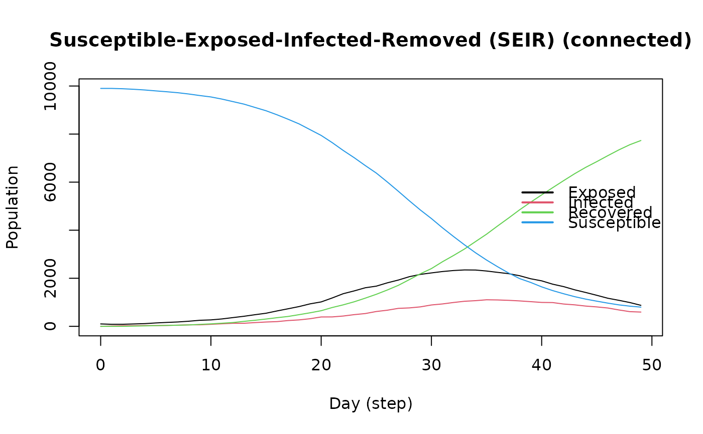

Susceptible Exposed Infected Removed model (SEIR connected)
Source:R/ModelSEIRCONN.R
ModelSEIRCONN.RdThe SEIR connected model implements a model where all agents are connected. This is equivalent to a compartmental model (wiki).
Arguments
- name
String. Name of the virus.
- n
Number of individuals in the population.
- prevalence
Initial proportion of individuals with the virus.
- contact_rate
Numeric scalar. Average number of contacts per step.
- transmission_rate
Numeric scalar between 0 and 1. Probability of transmission.
- incubation_days
Numeric scalar greater than 0. Average number of incubation days.
- recovery_rate
Numeric scalar between 0 and 1. Probability of recovery_rate.
- x
Object of class SEIRCONN.
- main
Title of the plot.
- ...
Currently ignore.
Value
The
ModelSEIRCONNfunction returns a model of class epiworld_model.
The plot function returns a plot of the SEIRCONN model of class
epiworld_model.
See also
epiworld-methods
Other Models:
ModelDiffNet(),
ModelSEIRDCONN(),
ModelSEIRD(),
ModelSEIR(),
ModelSIRCONN(),
ModelSIRDCONN(),
ModelSIRD(),
ModelSIRLogit(),
ModelSIR(),
ModelSISD(),
ModelSIS(),
ModelSURV(),
epiworld-data
Examples
# An example with COVID-19
model_seirconn <- ModelSEIRCONN(
name = "COVID-19",
prevalence = 0.01,
n = 10000,
contact_rate = 2,
incubation_days = 7,
transmission_rate = 0.5,
recovery_rate = 0.3
)
# Running and printing
run(model_seirconn, ndays = 100, seed = 1912)
#> _________________________________________________________________________
#> Running the model...
#> ||||||||||||||||||||||||||||||||||||||||||||||||||||||||||||||||||||||||| done.
#> done.
model_seirconn
#> ________________________________________________________________________________
#> Susceptible-Exposed-Infected-Removed (SEIR) (connected)
#> It features 10000 agents, 1 virus(es), and 0 tool(s).
#> The model has 4 states.
#> The final distribution is: 430 Susceptible, 0 Exposed, 6 Infected, and 9564 Recovered.
plot(model_seirconn)

# Adding the flu
flu <- virus("Flu", .9, 1/7)
add_virus(model_seirconn, flu, .001)
#' # Running and printing
run(model_seirconn, ndays = 100, seed = 1912)
#> _________________________________________________________________________
#> Running the model...
#> ||||||||||||||||||||||||||||||||||||||||||||||||||||||||||||||||||||||||| done.
#> done.
model_seirconn
#> ________________________________________________________________________________
#> Susceptible-Exposed-Infected-Removed (SEIR) (connected)
#> It features 10000 agents, 2 virus(es), and 0 tool(s).
#> The model has 4 states.
#> The final distribution is: 3 Susceptible, 0 Exposed, 0 Infected, and 9997 Recovered.
plot(model_seirconn)